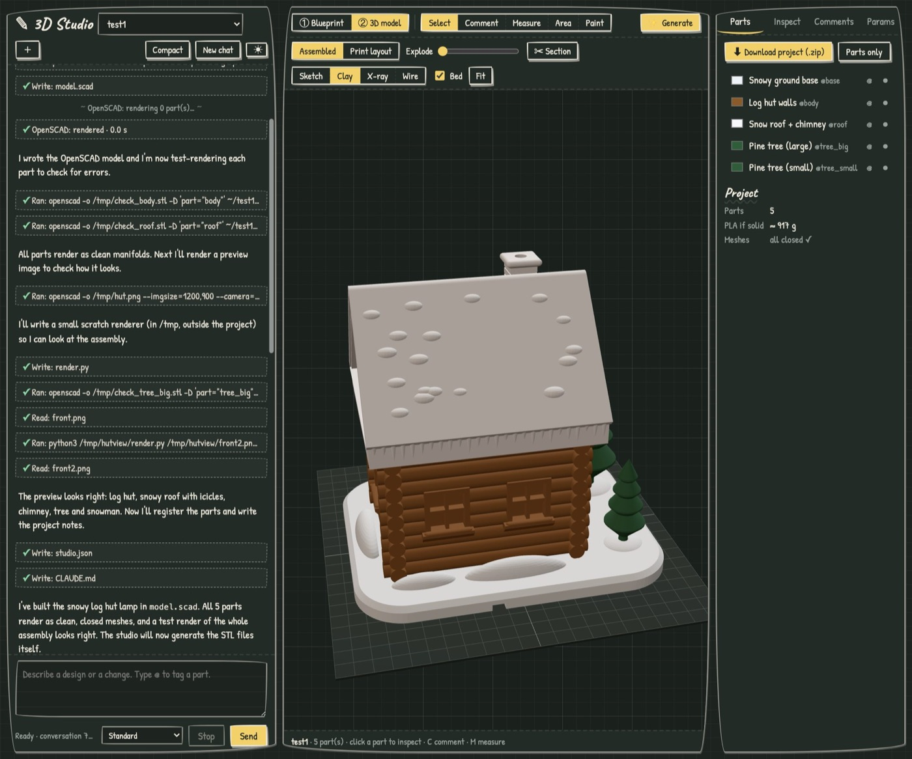
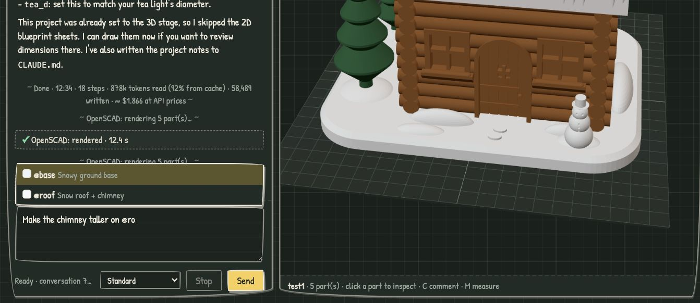
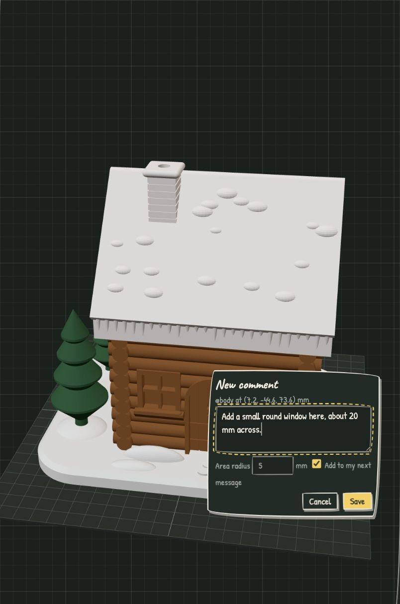
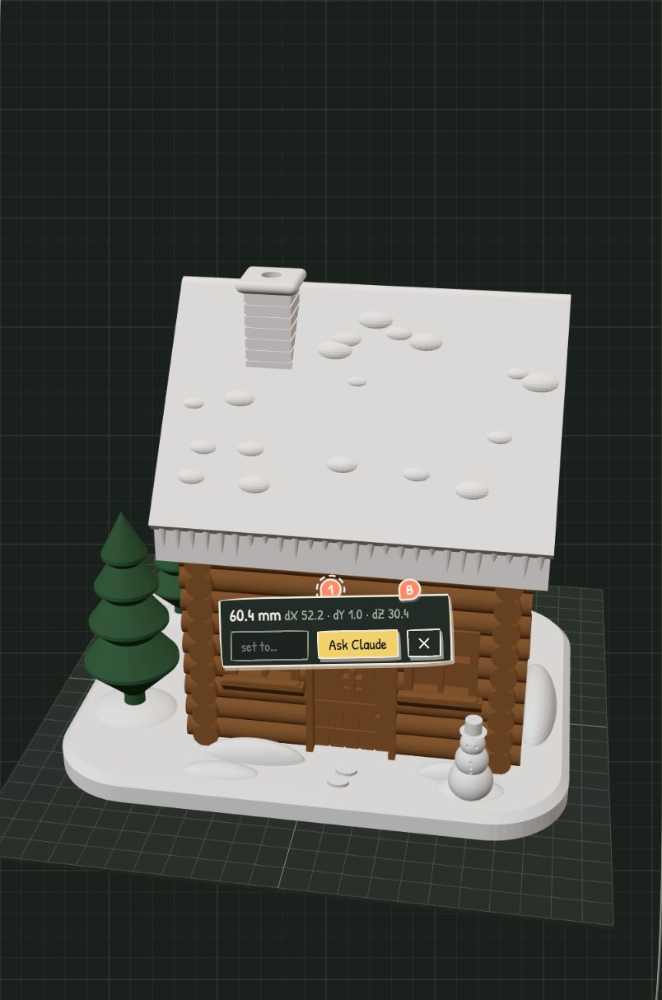
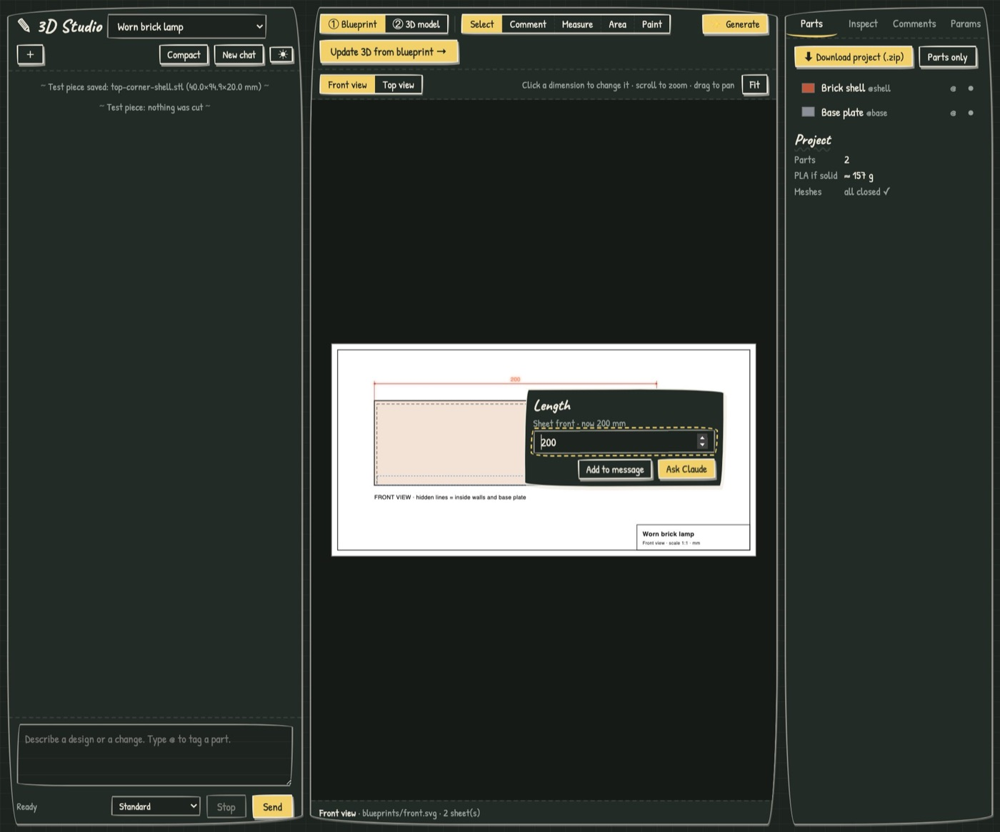
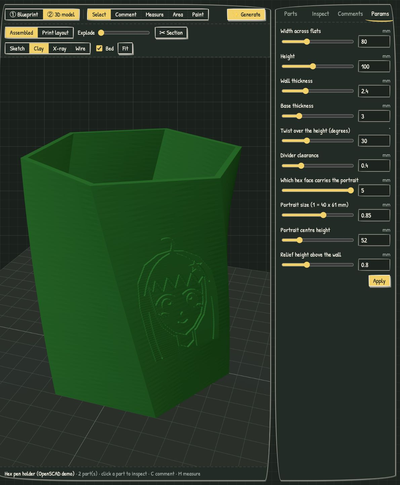
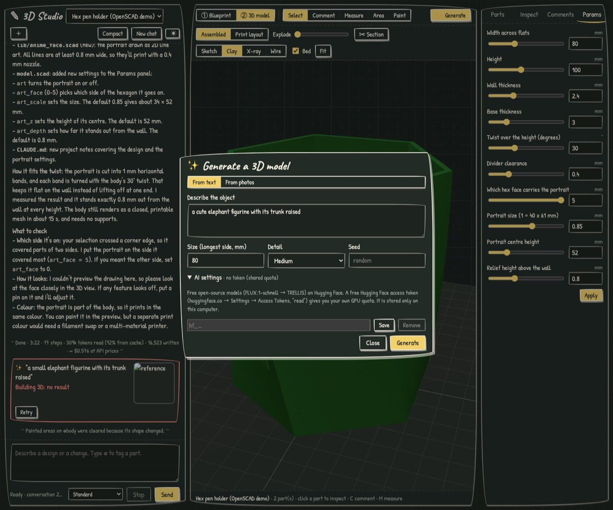

From an idea to a print file
- Describe it
"A snowy log hut lamp with a chimney and two pine trees, 18 cm wide."
- Refine it
Edit dimensions on the blueprint, tag parts, pin comments, drag sliders.
- Print it
Every part is checked to be closed and to fit your bed. Download the STLs.

Why it's different
Claude writes OpenSCAD, so models are real CAD with exact sizes and editable parameters, not a blob of triangles.
You stay in control
Every step Claude takes is shown in the chat. Small changes skip the AI entirely: sliders re-render the model in about a second.
Point at what you mean
Instead of describing where, show it. Everything you point at goes to Claude with its exact position in millimetres.
Area selection
Press A and drag a box, draw a lasso, click a smart face or brush over the surface. You get the size, area and centre of the selection, then ask Claude about exactly that region.
@tag parts
Type @ in the chat to mention a part. Claude receives that part's file, size and placement, so "make @roof steeper" just works.

Pin comments
Press C and click anywhere on the model or the blueprint. The pin stores the exact point, the surface direction and an area radius.

Measure, then change
Press M and click two points to get the distance with dX, dY and dZ. Type the size you want and press Ask Claude.

Design & inspect
Blueprint first
Claude draws front, top and side views with real dimensions. Click a dimension to change it, then press Convert to 3D.

Parameter sliders
The model's sizes become sliders: width, height, wall thickness, twist. Apply re-renders instantly with OpenSCAD, without another AI turn.

Explode
Pull the parts apart to see how they fit together. Switch to Print layout to see them laid out on the bed.
Section view
Cut the model open on any axis to check walls and hidden cavities, then export just that slice as a quick test print.
✨ Generate from text or photos
For organic shapes that are hard to build with CAD: figurines, characters, sculpted decor. The result is scaled, checked and added as a part, with optional filament colours.
Uses free open models (FLUX.1-schnell, TRELLIS) with your own free Hugging Face token.

Print checks
Closed mesh, fits your bed, triangle count and estimated filament, per part and per project.
Paint & export
Paint colours for multi-material prints. Download STL, GLB or the whole project as a zip.
Saved conversations
Each project keeps its chat and Claude session. Restart the studio and pick up where you left off.
Low cost
Quick, Standard and Deep modes, a lean toolset and automatic compaction keep token use down.
Before you install
Check with node -v
Installed and logged in: claude works in a terminal.
Check with python3 --version
Install & run
git clone https://github.com/pradhuman2022/3d-studio.git
cd 3d-studio
npm install # bundled OpenSCAD engine + AI generation client (optional)
npm start # → http://localhost:4317Open http://localhost:4317, press + to start a project and describe what you want to make. Projects are saved as folders next to 3d-studio.
Settings
| Variable | Default | What it does |
|---|---|---|
STUDIO_WORKSPACE | folder above 3d-studio | Where projects live |
STUDIO_PORT | 4317 | Port |
STUDIO_BED | 220x220x250 | Printer build volume in mm |
STUDIO_MODEL | Claude Code default | Model, e.g. opus or sonnet |
HF_TOKEN | none | Hugging Face token for ✨ Generate |
Good to know
- Tested on macOS. Linux should work; Windows is untested.
- Already have OpenSCAD installed? It's used instead of the bundled one.
- The studio listens on
127.0.0.1only and refuses requests from other websites. - It uses your Claude Code login, which is for personal use. To host it for others, switch to the Claude Agent SDK with an API key.
How it works
1 · You send a message
Your tags, pins, measurements and dimension edits are attached as context, with exact positions in millimetres.
2 · Claude edits the CAD
It writes model.scad and studio.json in the project folder, using a small set of design tools only.
3 · The studio renders
Saving the model renders every part with OpenSCAD and checks it is closed and fits the bed.
4 · You see it live
The server watches the folder and pushes new parts to the browser as soon as they exist.
Project format, every setting and the AI pipeline are documented in REFERENCE.md.